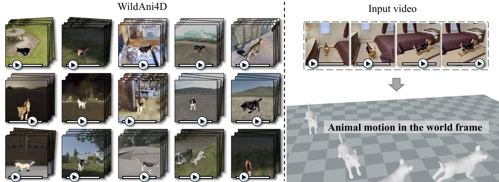
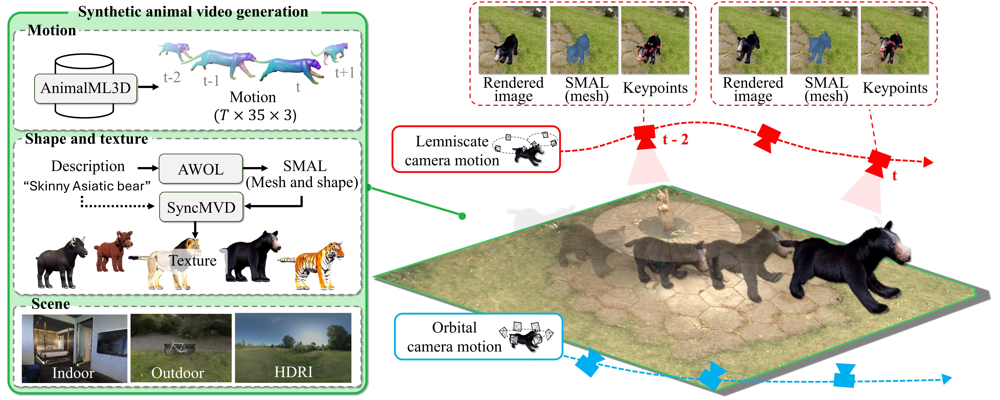
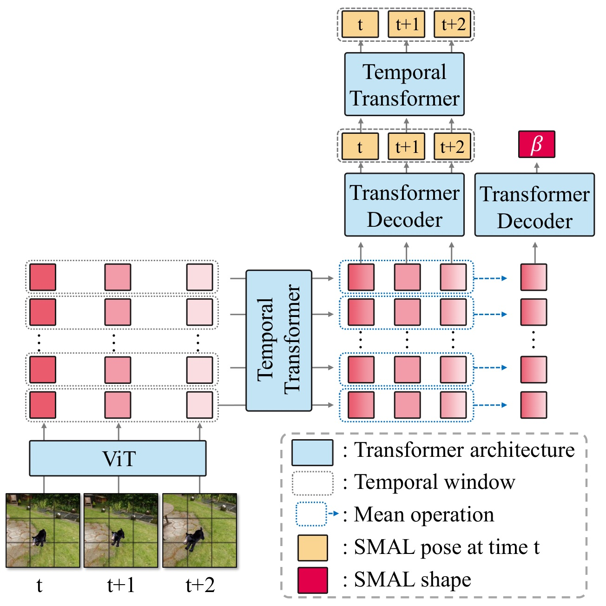
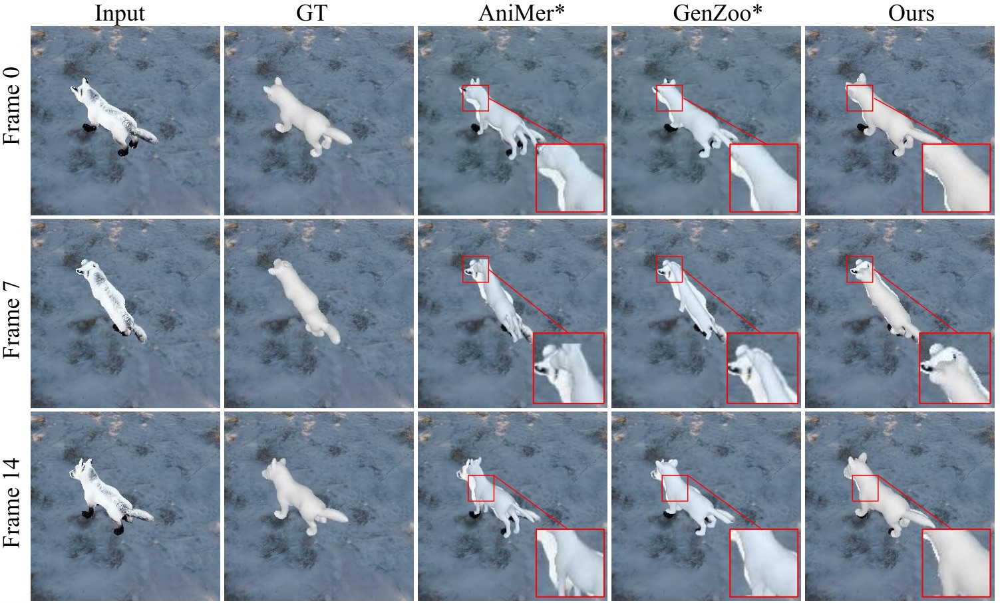
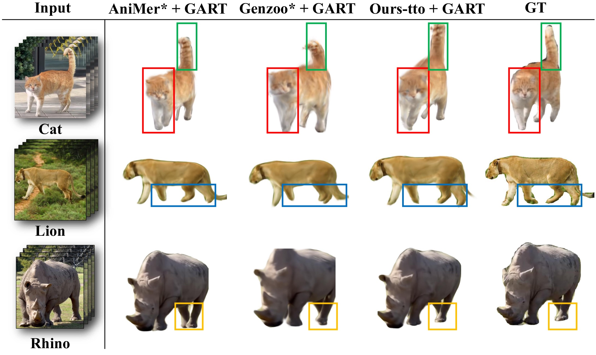
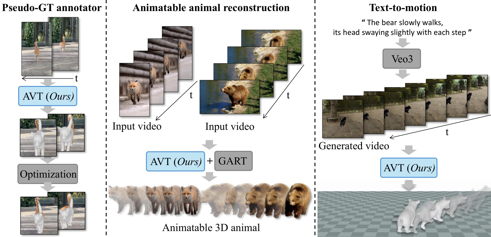

A video-native framework for recovering temporally coherent animal meshes, articulated motion, and world-space trajectories from monocular in-the-wild videos.

WildAni4D tackles the data scarcity and temporal instability that make animal video reconstruction difficult.
Three Veo3-generated animal samples are reconstructed with AniMer + DROID-SLAM, GenZoo + DROID-SLAM, and WildAni4D. The demo highlights temporal stability, shape consistency, and world-grounded motion recovery.
Across the three samples, our method preserves a consistent animal shape and predicts stable poses without jitter. In contrast, the baseline reconstructions show noticeable noise, including unstable tail motion and frame-to-frame shape fluctuations.
Scalable synthetic video generation combining dynamic textured SMAL animals, diverse 3D scenes, and realistic camera motion.
A video reconstruction model that uses temporal features and camera trajectory estimation to recover world-grounded animal motion.
Predicting one shape for the full sequence suppresses frame-wise drift while preserving per-frame articulated motion.
WildAni4D first creates fully annotated animal videos, then trains a temporal reconstruction model for stable 4D mesh recovery.

WildAni4D-Gen. Dynamic animals, textured SMAL shapes, diverse 3D scenes, and camera trajectories are rendered into annotated training videos.

Animal Video Transformer. Temporal modeling after the ViT backbone predicts per-frame pose and translation together with a sequence-level shape parameter.
Frame-wise methods often produce plausible single frames but flicker across time. WildAni4D makes the reconstruction video-native: the animal identity is consistent across the sequence while pose and global motion evolve frame by frame.

Qualitative reconstruction results on challenging animal videos.

Additional comparison visualizations across frames.
Temporally coherent 4D outputs can support annotation, animation, and generation pipelines.

Downstream applications include animal motion data annotation, animatable animal reconstruction, and text-to-motion generation.
@inproceedings{cho2026wildani4d,
title = {WildAni4D: Towards 4D Animal Mesh Reconstruction},
author = {Cho, Gyeongsu and Hu, Hezhen and Soon, Donghyeon and Kang, Changwoo and Joo, Kyungdon},
booktitle = {Proceedings of the IEEE/CVF Conference on Computer Vision and Pattern Recognition (CVPR) Findings},
year = {2026}
}